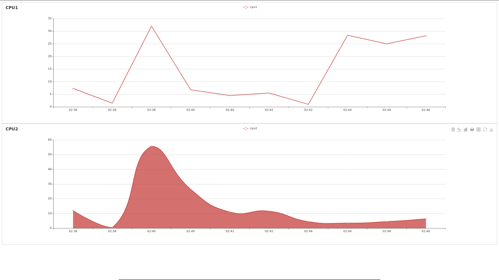

很多人都说使用Python开发WEB应用非常方便，那么对于WEB新手来说，到底有多方便呢？本文即将展示给你Python的魔法。 本文将通过一个实例：Flask实现计算机资源的实时监控，迅速带你入门Flask开发。 先说一下我的水平，博主的专业并不是做WEB开发的，对于WEB方面，只会写爬虫，因此，只能看懂html，略看得懂css与js，我估计有很多像我一样的小伙伴，因此，如果你的WEB掌握的水平在我之上或与我相当，那么，这篇文章将是你迅速入门Flask的终极教程。
先放上一张成果图：

访问，浏览器能够实时显示我的电脑的两个CPU的使用情况，这里特地采用两种显示方式，方便大家学习代码。 ## flask介绍 Flask is a microframework for Python based on Werkzeug, Jinja 2 and good intentions. And before you ask: It's BSD licensed! 搞科研或者搞技术，还是直接看英文吧，英文是你走向NB的基础。flask安装
可以参考我之前的文章：
另外，需要安装psutil，flask_socketio包，可直接使用pip安装
构建flask项目结构
在你的目录下新建如下的目录与文件： 1
2
3
4
5
6
7boss@boss-N501JW:~/Desktop/projects/CPU_memory$ tree
.
|-- app.py
`-- templates
`-- index.html
1 directory, 2 files
对于上述项目结构的构成，app.py中实现了路由及启动功能，templates文件夹中是模板文件，（这里插一句:我曾经看到很多人，在读某个用flask做的WEB项目的源码，一打开templates文件夹中，发现了很多css，js，html文件，一打开这些文件，发现几百上前行，一下子头都大了，立马放弃了读代码，哈哈哈哈），其实，对于像我一样专业不是做前端的小伙伴，完全可以不用担心，这些文件其实可以一行都不写，例如可以用Bootstrap框架来做前端，使用Bootstrap要写代码？兄弟，你不会用可视化编辑工具嘛！！！ 等以后我们做大项目，我们主要写的也就是除了templates文件夹中以外的文件。前端不会别担心，我也不会。
对于这篇文章所要实现的目标，我们做一个小结： 1. 执行app.py，计算机启动flask自带的服务器，开始允许WEB访问 2. 用户使用浏览器访问网址 3. flask接受到用户的请求后，app.py进行逻辑上的处理，将index.html传送给浏览器。
源码分析
app.py
源代码的分析在注释中，大家一定能看懂！ 1
2
3
4
5
6
7
8
9
10
11
12
13
14
15
16
17
18
19
20
21
22
23
24
25
26
27
28
29
30
31
32
33
34
35
36
37
38
39
40
41
42
43
44
45
46
47
48
49
50
51
52
53
54
55
56
57
58
59
60
61
62
63
64# -*- coding:utf-8 -*-
'''
CPU_and_MEM_Monitor
思路：后端后台线程一旦产生数据，即刻推送至前端。
好处：不需要前端ajax定时查询，节省服务器资源。
'''
import psutil #这个库可以用来获取系统的资源数据，详细可以看文档
import time
from threading import Lock
from flask import Flask, render_template, session, request
from flask_socketio import SocketIO, emit
# Set this variable to "threading", "eventlet" or "gevent" to test the
# different async modes, or leave it set to None for the application to choose
# the best option based on installed packages.
async_mode = None
app = Flask(__name__)
app.config['SECRET_KEY'] = 'secret!'
socketio = SocketIO(app, async_mode=async_mode)
thread = None
thread_lock = Lock()
# 后台线程 产生数据，即刻推送至前端
def background_thread():
count = 0
while True:
socketio.sleep(2)
count += 1
t = time.strftime('%M:%S', time.localtime()) # 获取系统时间（只取分:秒）
cpus = psutil.cpu_percent(interval=None, percpu=True) # 获取系统cpu使用率 non-blocking
socketio.emit('server_response',
{'data': [t] + list(cpus)[0:4], 'count': count},
namespace='/test') # 注意：这里不需要客户端连接的上下文，默认 broadcast = True ！！！！！！！
print [t] +list(cpus)[0:4]
print 100*'*'
# 当用户访问'/'时，执行index()函数。这也是python装饰器的用法。
def index():
return render_template('index.html', async_mode=socketio.async_mode)
# 每次执行render_template函数时，渲染器都会将index.html的变量值用其实际值替代。
# 与前端建立 socket 连接后，启动后台线程
def test_connect():
global thread
with thread_lock:
if thread is None:
thread = socketio.start_background_task(target=background_thread)
if __name__ == '__main__':
socketio.run(app, debug=True)
index.html
1 |
|